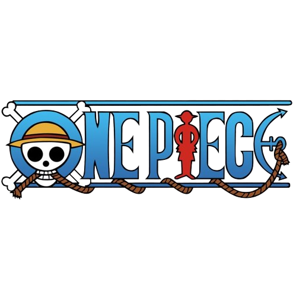

Marshall D. Teach
มาร์แชล ดี. ทีช
มาร์แชล ดี ทีช ( Marshall D.Teach ) หรือ หนวดดำ ( Blackbeard ) : ผู้ถือครองผล ผลยามิ ยามิ ( Yami Yami )ผลความมืดสายโรเกีย เเละหลังจากจบมารีนฟอร์ดกี้ได้เพิ่มมาอีกหนึ่งพลังคือ ผลกูระ กูระ ( Gura Gura ) ผลสั่นไหว สายพารามิเซีย ปรากฏครั้งเเรกในอนิเมะ ตอนที่ 146 หนวดดำเคยเป็นหนึ่งในลูกเรือของหนวดขาวเเตาหลังจากหนวดดำสังหารหัวหน้าหน่วยสองเเละเเย่งผล ยามิ ยามิ มาเขาก็ได้หนีออกจากกลุ่มมา เเละได้มาตั้งกลุ่มใหม่ชื่อ กลุ่มโจรสลัดหนวดดำ
หนวดดำมีบทบาทในภาค อิมเพลดาวน์เมือเข้าไปหาพรรคพสกเพิ่มเเละฟลังจากจบสงครามมารีนฟอร์ดหนวดดำได้ขึ้นยึดเอาอณาเขตเดิมของหนวดขาวใน New World เเละได้ขึ้นเป็น 1 ใน 4 จักพรรดิเเทนหนวดขาว